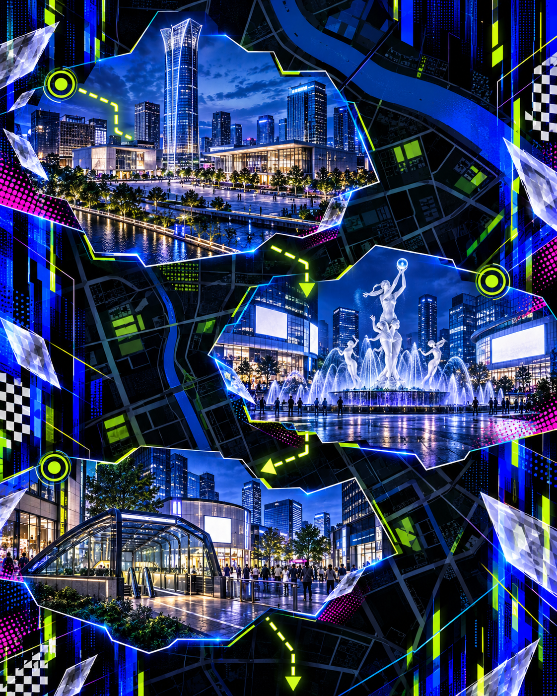

HHRG // LIVE活动公示
失序重奏
路线已公开。
胜负，仍未落定。
2026
DATE10.07
DATE10.07
杭州西湖文化广场→武林广场→龙翔桥

第一站 // 01
西湖文化广场
第二站 // 02
武林广场
第三站 // 03
龙翔桥
沿着图片的线索，
在城市里争取下一步。
活动说明HRG // 2026.10.07
探索者以队伍为单位参与，须按照顺序途经指定地点、完成任务，最终抵达终点。
游戏采取积分制，终点按到达位次给予较多积分奖励。
越快越有优势，但策略也能带来反败为胜的机会。各队可通过博弈和思考争取任务积分，尽可能拖延其他队伍的时间，并抵达终点。
所有探索者须提前在手机上安装HRG 专用 Web App，查看自身定位、全体探索者的任务完成情况，并接收突发任务等信息。
任务为所有探索者共享，先到先得。每项任务的积分归首先完成的队伍所有，不可再次获得。
任务以不同的定制BINGO 棋盘展示。各棋盘任务数量相同，含数个至数十个分值不等的任务。每项任务对应一张图片，须先在指定地点完成照片复刻，完成任务并经审核后，点亮对应任务格。
每队在每个地点最多完成 5 个任务。
人群中有一位“特殊人物”，能实时获取当前任务进度最慢队伍的定位，并追踪他们。若队伍被抓到，须完成一项特殊挑战，挑战可以对局内情况造成一定影响。
每当有队伍完成一个区域内的任务后，可能触发影响游戏的随机效果。效果可影响全局，也可只影响本队。